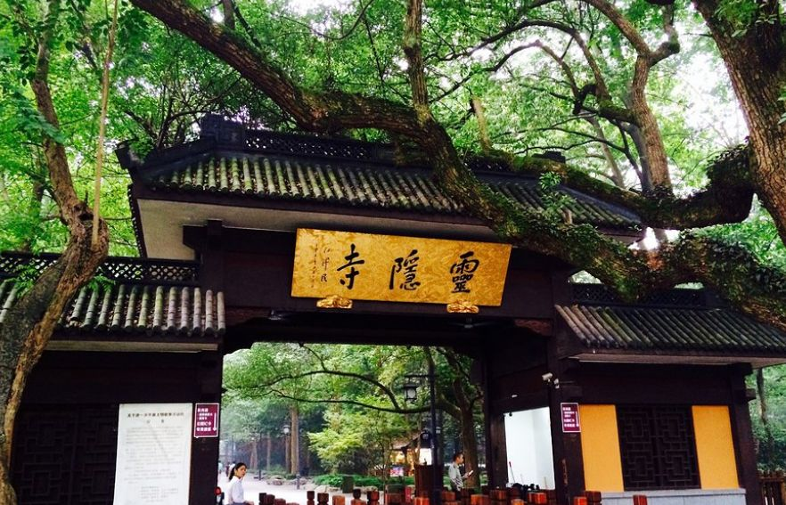
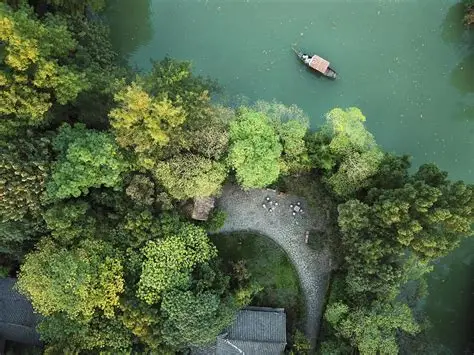

一湖烟雨 · 十里荷风 · 千年禅境
杭州之美，在于西湖的柔波、灵隐的钟声、西溪的芦雪、运河的桨影。这座被马可·波罗称为“世界上最美丽华贵之城”的地方，处处皆诗，步步是画。从白居易到苏东坡，从“西湖十景”到“三山五园”，杭州的山水里藏着半部江南文学史。
第八种打开方式，不只是走马观花，而是以心为舟，漫溯湖山深处，与千年的风雅重逢。以下为您呈现杭州不可错过的经典景致，每一处都值得驻足凝望。
世界文化遗产，中国最负盛名的淡水湖。苏堤春晓、断桥残雪、雷峰夕照、三潭印月……一湖碧水承载着千年诗文与传说。春日桃红柳绿，夏日荷风送爽，秋夜平湖秋月，冬雪断桥残雪，四季皆景。建议环湖徒步或骑行，也可乘画舫感受“船在画中游”的意境。

杭州最早的古刹，东晋咸和元年（326年）由印度高僧慧理创建，距今近1700年。背靠北高峰，面朝飞来峰，古木参天，云烟缭绕。飞来峰石窟造像群为全国重点文物，大雄宝殿24.8米香樟木佛庄严雄伟。济公和尚的传说更让这里充满传奇色彩，是东南佛国第一圣地。

中国首个国家湿地公园，与西湖、西泠并称“杭州三西”。曲水芦雪，摇橹船穿行于河道，秋雪庵观芦花，梅竹山庄赏梅，洪园体验南宋隐逸文化。非诚勿扰电影取景地。四季分明：春有探梅节，夏有龙舟盛会，秋有火柿节，冬有听芦节。
世界上最长的人工运河，杭州段是南端终点。拱宸桥是运河标志，桥西历史街区保留着清末民初的民居、茶馆、扇庄、药铺。夜游运河，两岸光影演绎宋韵今辉。中国京杭大运河博物馆、手工艺活态馆、富义仓粮仓遗址，串起一部流动的漕运史诗。
龙井村：西湖龙井茶核心产区，狮峰山上有乾隆御封的“十八棵御茶树”。品一杯明前龙井，看茶农炒茶，感受茶文化。
九溪十八涧：位于龙井以南，溪流蜿蜒，山峦叠翠，秋日枫叶如火，是杭州本地人最爱的徒步秘境。“九溪烟树”为新西湖十景之一。
北宋开宝三年（970年），吴越王为镇钱塘江潮而建。塔高近60米，登塔可俯瞰钱塘江大桥与壮阔江景。传说中《水浒传》鲁智深、武松在此圆寂。每年农历八月十八钱塘江大潮，六和塔是最佳观潮点之一。“六和听涛”为新西湖十景。
临安城遗址、太庙、德寿宫，一窥南宋繁华旧梦
孤山南麓，“天下第一名社”，金石篆刻艺术圣地
清代藏书楼，《四库全书》七阁之一，书香文脉所在
老杭州的活态记忆，茶馆、菜市、古桥，晨昏日常
🎫 小贴士：西湖景区可骑行或坐游览车；灵隐建议早7点前到达避开人流；运河夜游船票需提前预约。
© 杭旅日记 · 第八种打开方式 | 三屏以上的杭州山水长卷 | 湖山诗卷，风雅千年
世界文化遗产：西湖 · 京杭大运河 | 灵隐寺 · 西溪湿地 · 六和塔 | 一城山水半城仙